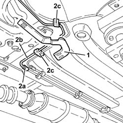

3340B62 rear connection central pipe - r r
- Path
- Procedures > 33 BRAKING SYSTEM > 3340 A(B.S. ANTI-LOCK BRAKING SYSTEM .) > 3340B abs system pipes > 3340B62 rear connection central pipe - r r
- Kind
- repair procedure (removal / refitting; the operation number is the code)
- Applies to
- all engines; all production periods
- Interactive page
- https://sloeber94.github.io/elrnDB-a156/en/#/3238104
Applies to: all engines; all production periods
 Removing
Removing
 Refitting
RefittingPlace the car on the lifting bridge.
3340A12 A'B.S. system. - electronic and hydraulic CONTROL UNIT R.R.
5530B52 Battery DRIP TRAY/SUPPORT - R.R.
3340A13 abs central mount - r r
4450B10 Front WHEEL (one) - R.R.
7055B64 Engine compartment DUST shield in front wheel arch (one), left or right - R.R.
Disconnect hose from hydraulic and electronic central unit to rear brake pipe fittings from clamps on engine compartment parcel tray.
Lift the car.
1. Remove brake pipe guard.
2. Unloose fitting (2a) and remove hose from hydraulic central unit to rear brake pipe fitting (2b) by removing clamps from it (2c).

Applies to: all engines; all production periods
Refitting
RemovingAssemble hose from hydraulic central unit to rear brake pipe fitting and fix it to bracket clamps.
Tighten to the aforesaid couple hose fitting from central unit to rear brake pipe fitting.
 | Fastening | Component | Ø | Value (daNm) |
|---|---|---|---|---|
- | Connector | BRAKE SYSTEM FITTINGS | M10 | 1.3 - 1.5 |
Mount brake pipe guard.
Lower the car.
Connect hose from hydraulic central unit to rear brake pipe fitting to clamps on engine compartment parcel tray.
7055B64 Engine compartment DUST shield in front wheel arch (one), left or right - R.R.
4450B10 Front WHEEL (one) - R.R.
3340A13 abs central mount - r r
5530B52 Battery DRIP TRAY/SUPPORT - R.R.
3340A12 A'B.S. system. - electronic and hydraulic CONTROL UNIT R.R.
3330A14 HYDRAULIC BRAKING SYSTEM - Bleed air
Take the car off the lifting bridge.
Topics linked from this page (7)
- 3330A14 HYDRAULIC BRAKING SYSTEM - Bleed air
- 3340A12 A'B.S. system. - electronic and hydraulic CONTROL UNIT R.R.
- 3340A13 abs central mount - r r
- 4450B10 Front WHEEL (one) - R.R.
- 5530B10 battery - r+r
- 5530B52 Battery DRIP TRAY/SUPPORT - R.R.
- 7055B64 Engine compartment DUST shield in front wheel arch (one), left or right - R.R.